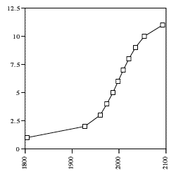

Access to physical, not computational, resources will define the next millennium. As the Earth's population grows, competition for natural resources will only increase. For most of the world, the important questions will be about clean water, clean soil, and clean air, not about access to electronic mail. The greatest threats to living standards around the world will come from a scarcity of natural resources, not from an unequal distribution of digital technologies.
| The graph to the right show world population from 1800 to 2100. (Kangas, 1998). As humanity expands to 11 billion by 2100, the task of feeding this population will place huge demands on the global environment. World fisheries are already beyond their limit (Brown, 1998). The effect of increasing population and decreasing resources will only result in "pitched competition for survival" (Kangas, 1998). |  |
This model suggests that "several hundreds of millions to a billion or so people could die of hunger in future decades. These deaths would not, however, be primarily 'distributional,'... instead the vast majority of them could be due to absolute global shortage" (a href="http://dieoff.org/page102.html">Daily and Ehrlich, 1990). The question is not if human population growth will slow, "but whether it will slow because societies quickly shift to smaller families or because ecological collapse and social disintegration cause death rates to rise" (Brown, 1998). This global crisis of resources will come to define living standards in the next millennium.
Food and water shortages are not going to be solved by electronic mail and the world wide web. One could argue that increasing access to digital communication will create a global awareness of environmental problems, leading to grass-roots solutions. When the 98% of the world without email access is finally able to communicate on some level, changes may occur. But this global consciousness is too far away to imagine. Environmental crisis lies in the foreseable future, but universal access to the Internet is a long way off.
Access to food, clean water, and sanitary living conditions will continue to define living standards throughout the next millennium. In the near future access to digital communications will define the economic and social elite of the Western world. Emerging digital technologies, however, will not solve the environmental crisis of the coming millennium. Even if the entire population of the Earth had Internet access today, economic and political structures are too powerful for change to occur. Digital communications and computational methods will not solve all of humanity's problems. Access to resources essential for survival will define global living standards in the coming millenium.
References
Grechen C. Daily and Paul R. Ehrlich (1990). An Exploratory Model of the Impact of Rapid Climate Change on the World Food Situation. Brain Food, ed. Jay Hanson.
Steve Kangas (1998). The Long FAQ on Liberalism.
Lester Brown, 1998. Worlwatch Institute Home Page.